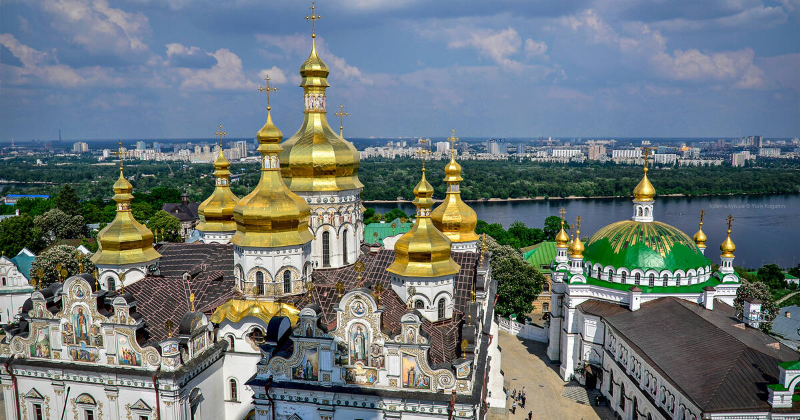
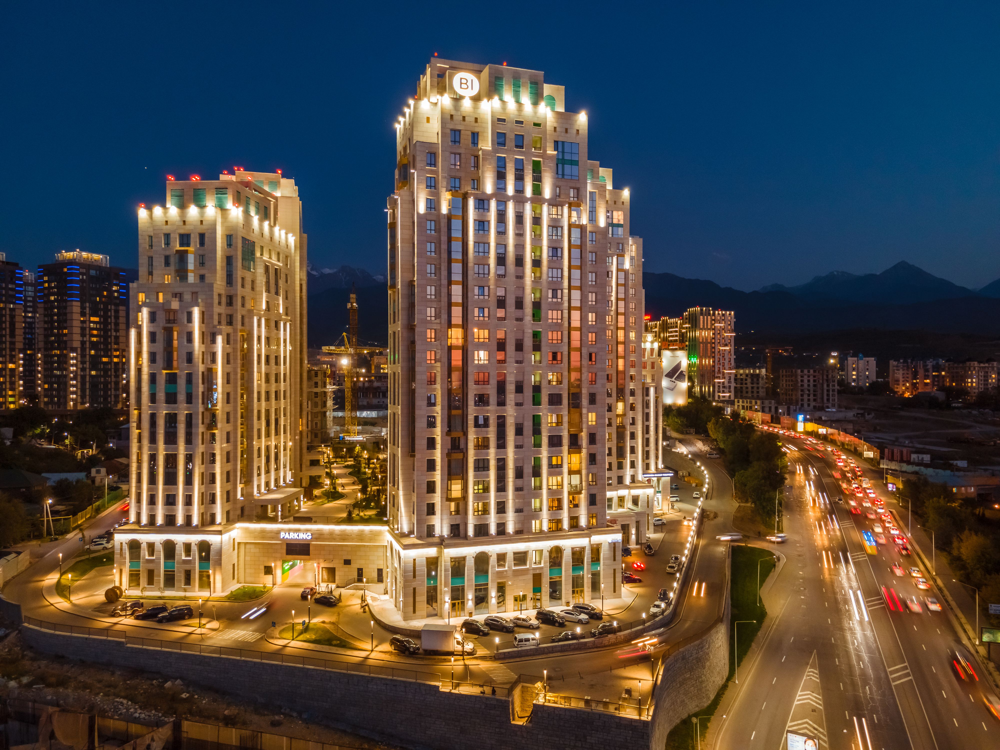
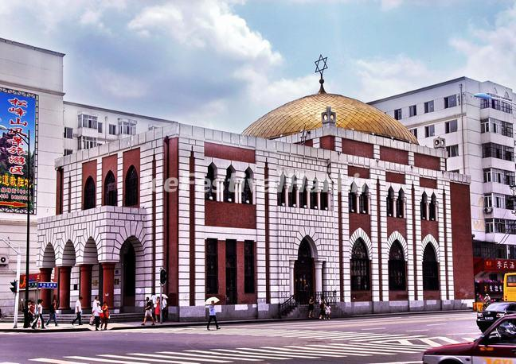

Saint Sophia Cathedral, in Harbin’s Daoli District, is the city’s most iconic symbol of Russian influence. Built in 1907 as a Russian Orthodox church (for the city’s Russian railway workers), it features a striking Byzantine design: a 36-meter-tall golden onion dome, flanked by four smaller domes, all set atop red-brick walls. Damaged in the 1960s, it was restored in 1997 and now serves as a museum showcasing Harbin’s early 20th-century history—exhibits include old photos of the city’s Russian concession era, vintage railway maps, and Orthodox religious artifacts (like ornate crosses and prayer books). The cathedral square is equally charming, with pigeons that gather around visitors, and benches where you can sit and admire the dome’s reflection in the fountain.
Winter (December–February): Snow dusts the dome and square, creating a fairy-tale scene—visit at dusk when the cathedral’s lights turn on.
Summer (June–August): The square’s flowers bloom, and the fountain runs—great for outdoor photos.
Avoid rainy days (dome photos look less vibrant).
20 CNY/adult; 10 CNY/students (with valid ID); free for kids under 1.2 meters.
Audio guide (available in Chinese/English): 30 CNY/rental.

Central Avenue, Harbin’s “European-style pedestrian street,” stretches 1.4 kilometers from the Songhua River to Sophia Cathedral. Built in 1900 (to serve the city’s Russian and Jewish communities), it’s lined with over 70 historic buildings in styles ranging from Baroque to Art Nouveau—highlights include the “Moscow Restaurant” (a grand 1920s building with a green copper roof) and the “Former Yokohama Specie Bank” (neoclassical with tall columns). The street’s most unique feature is its cobblestones: each dark gray stone was hand-laid over a century ago, and their smooth surface (worn down by foot traffic) adds to the avenue’s old-world charm. Today, it’s packed with shops (selling everything from local snacks to luxury brands), cafes, and street performers (often playing Russian folk music).
Summer (June–August): Cool evenings are ideal for strolling; outdoor cafes set up tables on the street.
Winter (December–February): The street is decorated with ice lanterns and snow sculptures—festive but busy.
Spring (April–May) and autumn (September–October): Mild weather, fewer crowds, and great for window-shopping.
Free entry (no charge to walk the street).

Harbin was home to one of East Asia’s largest Jewish communities (1900s–1950s), and this museum preserves their legacy. Housed in the former “Harbin Jewish Primary School” (built in 1928), a red-brick building with a sloped roof and large windows, it has three exhibition halls: one on the community’s daily life (displaying old schoolbooks, family photos, and traditional Jewish clothing), one on their contributions to Harbin (like building hospitals and newspapers), and one on Jewish religious traditions (with a small replica of a synagogue altar). Next to the museum is the “Harbin Synagogue” (built in 1909), a small but elegant building with a blue dome—inside, you can hear recordings of Jewish folk music and see old prayer scrolls.
Year-round: The museum is indoors (20°C–25°C) and open every day except Monday.
Morning (10:00–11:30 AM): Fewer visitors, so you can take your time with exhibits.
20 CNY/adult; 10 CNY/students; free for kids under 1.2 meters.
Synagogue visit: Included in the museum ticket.